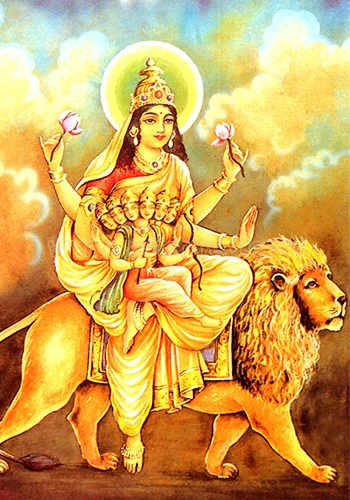
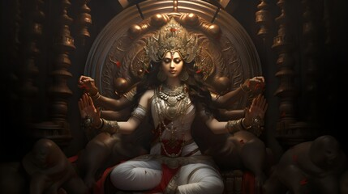

First Day:Shailaputri

On the first day, Devi Shailaputri is worshipped. In this form, Devi Parvati is revered as the daughter of Himalaya Raja.Shaila means extraordinary or rising to great heights. The divine consciousness represented by Devi always surges from the peak. On this first day of Navratri, we propitiate Devi Shailaputri so that we may also attain the highest state of consciousness.
Second Day:Brahmacharini

The second day is of the deity Brahmacharini. She is the Maa of austerity and penance as her name Brahmacharini represents the female who practices Brahmacharya (renunciation from worldly pleasures). She walks on bare feet, carrying a Japa mala in her right hand and kamandalu in her left hand. She endows her devotees with grace, blissfulness, peace, and prosperity.
Third day:Chandraghanta

The third day is of Navratri Goddess Chandraghanta. Chandraghanta wears a half-moon shaped like a bell on her forehead, which describes the etymology of her name. She adorned her forehead with the half-moon after marrying Lord Shiva. She is revered by the followers on the third day for tranquillity and prosperity in life. She mounts on a tigress and is described with ten hands and three eyes. She carries Trishul, Gada, sword, and Kamadalu in her four left hands while her fifth hand is in Varadamudra. She holds a lotus, arrow, Dhanush, Japa mala in her right fourth hand and keeps her fifth right hand in Abhaya Mudra.
Fouth day:Kushmanda

Deity Kushmanda possesses the power to live inside the blazing sun, hence the name Kushmanda. Having a luminous body like that of the sun, she is credited with creating a world with her divine and radiant smile. The Navratri importance of this Goddess is that she bestows her worshippers with good well-being, strength, and strength. She is represented with eight hands, therefore known by the name of Ashtabhuja Devi. Her form is pictured with eight to ten hands holding a trident, discus, sword, hook, mace, bow, arrow, two jars of honey, and blood. Her one hand is always in the Abhaya mudra form she blesses all her followers. She rides on a tiger.
Fifth day:Skandamata

The fifth day of Navratri is for Skandamata- mother of the war God Skanda (Kartikey). She rides ferocious lion and carries Lord Skanda(infant) in her lap. It is believed that she was chosen as the commander in chief of war against the demon, thereby she is also recognized as “Goddess of Fire.” The iconography of this female God is depicted with four hands, lotus flower in her upper two hands, one hand in Abhaya Mudra, and one right hand, she carries Skanda. She is often pictured seated on a lotus flower and is referred to as Padamasani.
Sixth day: Katyayani

The sixth form of Maa Durga is Katyayani also adored as Mahalaxmi. Katyayani was born to destroy bull demon Mahishasura. Her defining characteristics include anger, vengeance, and ultimate victory over evils. All those who remember her with a pure heart and utmost faith are blessed with boons. She sits on a magnificent lion and is portrayed with four hands. Sword and lotus in her left hands and rights hands in Abhaya Mudra and Varadamudra.
Seventh day:Kalaratri

Maa with a dark complexion, furious soul, and a fearless posture. Her big red eyes, sticking blood-red tongue, and sobre on her hand make her the Goddess of death. Also, she is well-known by the names of Kali Maa and Kalratri. She is seen seated on a donkey adorning scattered black hair and three round eyes. She has four hands. Right hand in Abhaya Mudra and Vardara Mudra and sword and iron hook in the left hand.
Day Eight:Mahagauri

Mahagauri is the eighth form of Goddess Durga and is regarded as the most graceful form among the navaforms. Her beauty glows like pearl purity. Being the Goddess of purity, cleanliness, endurance, and peace, her worshipper's flaws and mistakes are burnt to ashes. Mahagauri has four arms. She keeps her right hand in the pose of alleviating suffering and trident in the lower right hand. Her upper left arm holds a tambourine and the lower left provides blessings.
Day nine:Siddhidharti

She possesses natural healing powers. She sits in a blissfully happy and enchanting pose. She is the Goddess Siddhidharti either journeys on a lotus or a tiger or lion. She has four hands. She holds Gada in one and Chakram in the other. A lotus flower in one and shankha in the other.
Know More